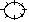
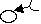
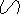
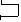
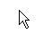
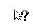
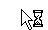
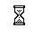
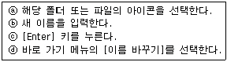

워드프로세서-3급(폐지) (2004-03-14 기출문제)
1과목: 워드프로세서 용어 및 기능
1. 다음 중에서 인쇄 속도를 나타내는 단위가 아닌 것은?
- CPS
- LPM
- PPM
- RPM
(정답률: 57%)

2. 다음 중 한자의 음을 모르는 경우 한자를 변환시키는 가장 효과적으로 방법은?
- 음절 단위 변환
- 단어 단위 변환
- 문장 단위 변환
- 부수 입력 방식
(정답률: 57%)
3. 다음 중 각종 프로그램 또는 데이터 파일들을 쉽게 지정할 수 있도록 하기 위해 조그만 그림이나 기호로 화면에 표시하는 것을 무엇이라고 하는가?
- 클립아트(Clip Art)
- 아이콘(Icon)
- 레지스터(Register)
- 로드(Load)
(정답률: 68%)
4. 다음 중에서 입력장치가 아닌 것은?
- 라이트 펜
- 스캐너
- 디지타이저
- 모니터
(정답률: 74%)
5. 다음 중에서 문서 작성시 이미지나 그래픽을 삽입하여 사용할 수 있도록 미리 파일로 제작된 데이터 모음을 무엇이라고 하는가?
- 캡션(Caption)
- 클립보드(Clip Board)
- 매크로(Macro)
- 클립아트(Clip Art)
(정답률: 66%)
6. 다음 중에서 프린터 헤드의 가는 구멍을 통하여 잉크를 분사시켜서 문서를 인쇄하는 프린터는?
- 감열방식 프린터
- 잉크젯 프린터
- 레이저 빔 프린터
- 열전사 프린터
(정답률: 80%)
7. 다음 중에서 워드프로세서의 편집 기능이라고 볼 수 없는 것은?
- 삭제 기능
- 미리 보기 기능
- 삽입 기능
- 치환 기능
(정답률: 64%)
8. 다음 중에서 본문의 양쪽 끝을 기준으로 알맞게 배분하는 문장 정렬 방법은?
- 왼쪽 정렬
- 오른쪽 정렬
- 혼합 정렬
- 가운데 정렬
(정답률: 56%)
9. 다음 중 워드프로세서에서 문서의 보안을 위하여 제공하는 기능은?
- 다른 문서와의 호환
- 암호설정
- 자동저장 및 복구
- 연결하기
(정답률: 80%)
10. 다음 중 작성하는 문서의 균형을 위하여 페이지의 상, 하, 좌, 우에 여백을 두는 것을 무엇이라고 하는가?
- 마진(Margin)
- 레이아웃(Layout)
- 래그드(Ragged)
- 포맷(Format)
(정답률: 87%)
11. 다음 중 워드프로세서에서 문서 편집시 자주 사용하는 동일한 어휘나 특수문자 등을 약어(준말)로 미리 등록시킨 후 필요할 때마다 호출하여 손쉽게 사용하는 것으로 같은 내용을 반복적으로 입력하는 경우에 유용한 기능은?
- 메일 머지(Mail Merge)
- 개체 삽입
- 상용구(Glossary)
- 치환(Replace)
(정답률: 80%)
12. 다음 중에서 단독으로 사용하지 않고 다른 키와 함께 사용하여 특수한 기능을 수행하는 키와 거리가 먼 것은?
- [Alt]
- [Shift]
- [Ctrl]
- [Esc]
(정답률: 81%)
13. 다음 중 작성된 문서의 파손이나 분실에 대비하여 파일을 따로 복사하는 작업을 무엇이라고 하는가?
- 링크(Link)
- 백업(Backup)
- 옵션(Option)
- 머지(Merge)
(정답률: 83%)
14. 다음 중에서 토글 키가 아닌 것은?
- [Insert]
- [Caps Lock]
- [Num Lock]
- [Ctrl]
(정답률: 80%)
15. 다음 중 워드프로세서에서 문서 작성시 특정 부분의 여러 줄의 내용을 가장 효율적으로 삭제하는 방법은?
- 지울 부분의 맨 앞에서 [Delete] 키를 계속 눌러서 지운다.
- 지울 부분의 맨 뒤에서 [Back Space] 키를 계속 눌러서 지운다.
- 지울 부분을 영역으로 선택한 후 [Delete] 키를 눌러서 지운다.
- 수정 상태에서 [Space] 키를 계속 눌러서 지운다.
(정답률: 84%)
16. 다음 중 문서 파일에 해당하는 확장자가 아닌 것은?
- TXT
- HWP
- ZIP
- DOC
(정답률: 53%)
17. 다음 중에서 마우스의 기능이 아닌 것은?
- 문자의 입력
- 커서의 이동
- 프로그램의 실행
- 영역의 지정
(정답률: 85%)
18. 다음 중 문단의 시작을 몇 글자 안쪽에서 시작하게 하는 기능을 무엇이라고 하는가?
- 내어쓰기(Outdent)
- 들여쓰기(Indent)
- 상용구(Glossary)
- 워드 랩(Word Wrap)
(정답률: 77%)
19. 다음 중 실제로 문서 내용의 변경을 가져오지 않는 교정부호는?


(정답률: 88%)
20. 다음 중에서 교정부호의 의미가 올바르게 설명된 것은?
- : 사이 띄우기
- : 삭제하기

: 자리바꾸기
: 들여쓰기
(정답률: 83%)
2과목: PC 운영 체제
21. 다음 중 한글 Windows 98에서 사용하는 폴더에 대한 설명으로 옳지 않은 것은?
- 폴더는 계층적 구조를 갖는다.
- 폴더는 [제어판]의 [프로그램 추가/제거] 프로그램에 의해 만들어야 한다.
- 폴더의 이름을 변경할 수 있다.
- 하나의 폴더는 다른 드라이브나 폴더로 이동, 복사가 가능하다.
(정답률: 67%)
22. 한글 Windows 98의 [작업 표시줄 등록정보] 창에 있는 [작업 표시줄 옵션] 탭에서 설정 가능한 항목이 아닌 것은?
- 항상 위
- 시작 메뉴에 작은 아이콘 표시
- 도구 모음 표시
- 자동 숨김
(정답률: 33%)
23. 한글 Windows 98에서 [F2] 키를 사용하여 이름 바꾸기를 할 수 없는 바탕 화면의 아이콘은?
- 내 문서
- 휴지통
- 내 컴퓨터
- 네트워크 환경
(정답률: 77%)
24. 한글 Windows 98의 [제어판]에 있는 [키보드 등록정보] 창에서 설정할 수 있는 항목이 아닌 것은?
- 키 재입력 시간 조절
- 고정키 설정
- 키 반복 속도 조절
- 커서 깜박임 속도 조절
(정답률: 53%)
25. 한글 Windows 98에서 문서의 일부 내용을 잘라 내거나 복사, 붙여 넣기 할 때 사용되는 임시 기억 장소는?
- 레지스트리
- 레지스터
- 클립보드
- 메모장
(정답률: 71%)
26. 한글 Windows 98이 부팅 될 때 나는 음향(소리)을 변경하려고 할 때, 가장 관련이 깊은 [제어판]의 항목은?
- 멀티미디어
- 프로그램 추가/제거
- 사운드
- 암호
(정답률: 78%)
27. 다음 중 한글 Windows 98에서 [휴지통]에 관한 설명으로 옳지 않은 것은?
- [휴지통]은 삭제된 파일이나 폴더가 일시 보관되는 장소이다.
- [Shift]+[Delete] 키 눌러서 삭제한 파일도 복원할 수 있다.
- [휴지통] 창의 [파일]-[복원] 메뉴를 선택하면 [휴지통]에 버린 파일이나 폴더를 복원할 수 있다.
- [휴지통] 창 내에 있는 모든 파일이나 폴더를 영구 삭제하려면 메뉴에서 [파일]-[휴지통 비우기] 메뉴를 선택한다.
(정답률: 66%)
28. 한글 Windows 98의 [디스플레이 등록정보] 창에서 창이나 바탕 화면에서 사용하는 글꼴, 글자 크기, 글자 색 등을 변경할 수 있는 탭은?
- 배경 화면
- 화면 보호기
- 화면 배색
- 설정
(정답률: 61%)
29. 한글 Windows 98의 [탐색기]에서 파일을 선택하여 [Shift] 키를 누른 상태에서 동일한 디스크 드라이브에 있는 다른 폴더로 끌어서 놓았을 때의 결과는?
- 파일 복사
- 파일 삭제
- 파일 이동
- 파일 수정
(정답률: 66%)
30. 다음 중 한글 Windows 98에서 [보조프로그램]의 [시스템 도구] 메뉴에 포함되지 않은 것은?
- 디스크 정리
- 디스크 검사
- 시스템 정보
- 새 하드웨어 추가
(정답률: 60%)
31. 다음 중 한글 Windows 98에서 사용하는 마우스의 포인터 모양에 대한 설명으로 옳지 않은 것은?

: 보통 선택
: 실행중 에러 발생
: 백그라운드에서 작업
: 사용중
(정답률: 77%)
32. 한글 Windows 98에서 [탐색기] 창의 [보기] 메뉴에 있는 아이콘 정렬 방식이 아닌 것은?
- 날짜순
- 이름순
- 색상순
- 크기순
(정답률: 75%)
33. 다음 중 한글 Windows 98의 [제어판]에 들어있는 항목이 아닌 것은?
- 글꼴
- 마우스
- 키보드
- 휴지통
(정답률: 66%)
34. 다음 중 한글 Windows 98을 부팅할 수 있는 저장 매체가 아닌 것은?
- VRAM
- 하드디스크
- 플로피디스크
- CD-ROM
(정답률: 57%)
35. 다음은 한글 Windows 98에서 폴더나 아이콘의 이름을 변경하는 순서이다. 순서를 올바르게 나열한 것은?

- ⓐ - ⓑ - ⓒ - ⓓ
- ⓐ - ⓓ - ⓑ - ⓒ
- ⓓ - ⓐ - ⓑ - ⓒ
- ⓓ - ⓑ - ⓒ - ⓐ
(정답률: 71%)
36. 다음 중 한글 Windows 98에서 활성화 된 창을 최소화시키는 기능을 가진 제목 표시줄 내의 단추는?
(정답률: 76%)
37. 한글 Windows 98의 [탐색기] 창에서 임의의 폴더 아이콘에 대한 바로 가기 메뉴가 아닌 것은?
- 열기
- 포맷
- 보내기
- 이름 바꾸기
(정답률: 60%)
38. 다음 중 한글 Windows 98의 [프린터] 폴더에서 수행할 수 있는 작업이 아닌 것은?
- 새로운 프린터의 추가
- 사용하지 않는 프린터의 삭제
- 기본 프린터 설정
- 프린터를 기본 팩스로 설정
(정답률: 47%)
39. 다음 중 한글 Windows 98에서 인쇄 중인 활성 프린터 인쇄 창에 대한 설명으로 옳지 않은 것은?
- 인쇄중이거나 인쇄 대기 중인 문서들이 표시된다.
- 인쇄중인 문서의 인쇄 작업 삭제는 불가능하다.
- 대기중인 문서의 인쇄 작업 삭제는 가능하다.
- 인쇄중인 문서의 인쇄 잠깐 멈춤이 가능하다.
(정답률: 45%)
40. 한글 Windows 98에서 파일이나 폴더의 복사와 이동에 대한 설명으로 옳은 것은?
- 복사는 파일과 폴더 모두 가능하다.
- 이동은 파일만 가능하다.
- 복사는 폴더만 가능하고 이동은 둘 다 가능하다.
- 복사는 둘 다 가능하고 이동은 폴더만 가능하다.
(정답률: 51%)
설명: CPS는 초당 문자 수, LPM은 분당 페이지 수, PPM은 분당 인쇄 페이지 수를 나타내는 단위이지만, RPM은 분당 회전 수를 나타내는 단위이므로 인쇄 속도를 나타내는 단위가 아니다. RPM은 주로 회전하는 기계나 장치의 속도를 나타내는 데 사용된다.